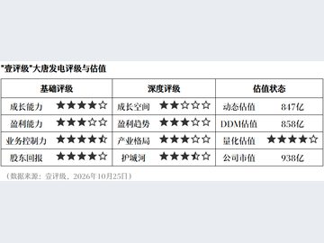
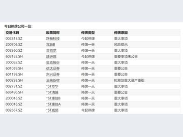

01
维护市场稳定 央行设立债市非银大额赎回互换便利
10月26日，央行发布公告称，为进一步落实好“构建科学稳健的货币政策体系和覆盖全面的宏观审慎管理体系”的要求，维护债券市场稳定…

10月26日，央行发布公告称，为进一步落实好“构建科学稳健的货币政策体系和覆盖全面的宏观审慎管理体系”的要求，维护债券市场稳定…
新华社北京10月27日电（记者张千千）记者从中国进出口银行获悉，截至10月27日，进出口银行已完成2026年新型政策性金融工具投放任务，支持项目超500个…

近段时间，央地密集部署加力推进服务业扩能提质，进一步激发服务业发展新动能，释放服务消费潜力和服务业投资空间。

据央视新闻，记者27日晚间从国家开发银行了解到，截至10月27日，国开行已经完成今年3650亿元新型政策性金融工具投放任务，资金全部用于补充项目资本金…

数据显示，截至2026年9月末，深圳全市投向信息传输、软件和信息技术服务业中长期贷款余额较年初新增超1000亿元，占全市中长期贷款增量的比重超三成。
今年以来，中国银行安徽省分行深入学习贯彻中央金融工作会议精神，准确把握适度宽松货币政策导向，多措并举，不断加大金融支持力度…

作为广州开发区、黄埔区布局新型储能上游关键材料的重点产业项目，该项目的落地建设将进一步壮大该区千亿级新材料产业集群…

新质生产力是引领高质量发展、优化经济结构的核心引擎，更是新时代推动辽宁全面振兴的重要动能。

财联社10月26日讯（编辑 李响）今日资金面有所收紧，但债市整体偏强，长债涨幅再次领跑。尾盘，央行发布债市非银大额赎回互换便利工具BNSF。
央行公告，今日开展560亿元7天期逆回购操作，操作利率1.40%。同时，开展了3980亿元隔夜逆回购操作。Wind数据显示，当日3380亿元逆回购到期。
